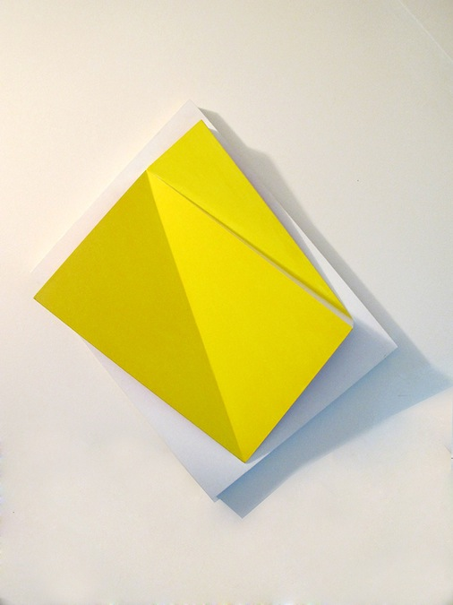
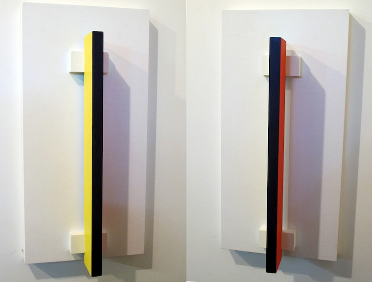

DIMENSIONAL PAINTING.
"In about 1981," Rubello says, "I began to leave painting. I thought, 'Well, the next move has to be out from the wall. It has to be out from the canvas. And instead of making it illusionistic [as in Blue Cut], I should actually do it. It should be color in space.' So I started constructing these things, making these paintings that were dimensional. I called it 'actual space.'"
Rubello's turn toward dimensional paintings opens up the possibility of working with reflected color and movable paintings. It also advances his concern with illusionistic play; often, his dimensional works contain brilliant, saturated colors that are invisible from certain perspectives, revealed only after the viewer has physically moved around them.
See BLUE CUT , REFLECTED , and MOVABLES .
